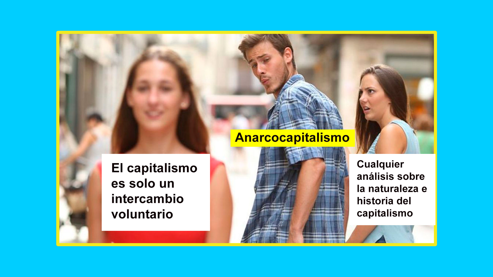
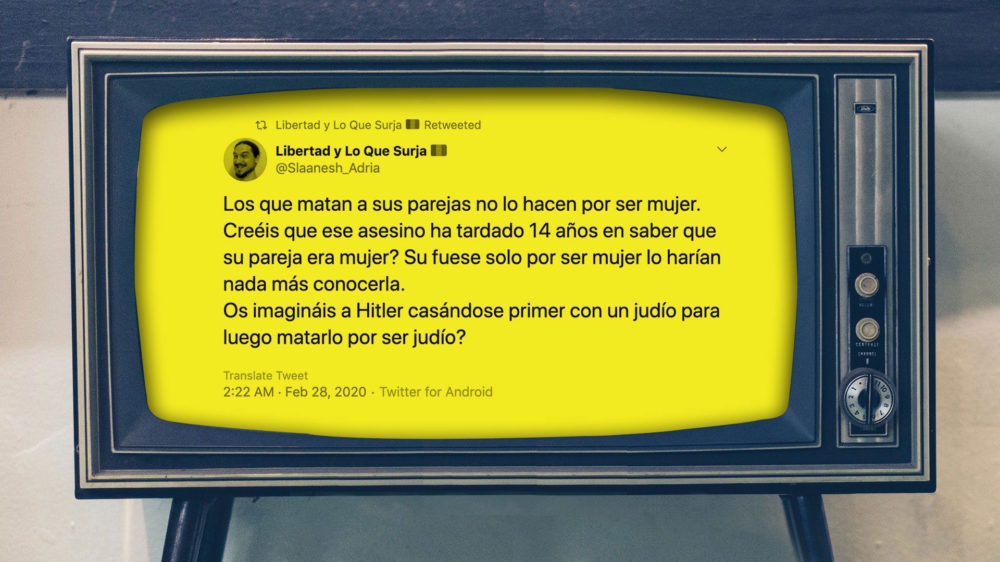

Los capitalistas no pueden ser anarquistas
Tags: breadtube economia anarquismoEl anarquismo puede ser muchas cosas, libertad radical sin fronteras, sin dioses ni amos, la emancipación de los pueblos indígenas del mundo, la destrucción del estado y principalmente la destrucción de las jerarquías, pero lo que no es...es capitalismo.
En este pequeño video critíco las las ideas del anarcocapitalista más famoso del internet: Libertad y lo que surja
Transcripción video Chinicuil Los capitalistas no pueden ser anarquistas
Hola que tal mi nombre es Chinicuil y los invito a que me acompañen en este maravilloso viaje a tierras inexploradas de teoría que a nadie le deberían de importar una mierda.
En este confuso recorrido nos acompañarán los videos y testimonios de Adrià, un anarco-capitalista con el que estoy completamente en desacuerdo en casi todo lo que dice.
Prepárense para alienarse un montón
Sí ya sé es una obviedad pero esta idea es muy poderosa ya que da paso a una serie de preguntas muy locas cuando piensas en el estado, las empresas o la familia tradicional ¿esta jerarquía es necesaria? ¿Los problemas de esta institución no estará siendo causados por una jerarquía?
Y un día si estas en el metro pensando en Aladin, la de 1992, y te das cuenta que el verdadero problema de Aladdin fue que no le pidió al genio una sociedad sin jerarquías, el sultan vive en un palacio y hay gente viviendo en las calles de Agraba y tú eres una de ellas Aladdin abre los ojos maldita sea
Y poco a poco te das cuenta que por mejores intenciones que tenga la parte alta de la pirámide inevitablemente verá por sus propios intereses
Esto pasa en las empresas, en el estado, la la familia tradicional etc etc etc
Estoy resumiendo muy duro y no soy ningún experto pero si quieren una mejor introducción sobre el anarquismo dejo algunos links en la descripción del video, en especial te recomiendo los videos de Escupamos la historia, además estan explicados en un glorioso español chileno y parcialmente en mapuche y son brutales
Ahora intentaré explicar qué demonios es el anarco-capitalismo
¿Qué demonios el anarco-capitalismo?
Como les decía al principio del video hay muchas corrientes dentro del anarquismo, y una de estas es el anarco-capitalismo.
En resumen los anarcocapitalistas no quieren un estado...porque dicen que el estado es lo que evita que el capitalismo lleve a la humanidad a una utopía.
Para ilustrar las ideas anarco-capitalistas voy a utilizar fragmentos de la obra del anarco-capitalista más famoso que conozco… Adrià de libertad y lo que surja y por su obra me refiero a sus videos y tuits.
Obvio dejo los links a los videos por si quieren ver los mismos conceptos explicados de manera larga y tediosa
Por qué los capitalistas no pueden ser anarquistas parte 1
Los anarcocapitalistas tienden a cambiarle el nombre a las cosas, por ejemplo: al capitalismo lo llaman “un intercambio voluntario”, el libre mercado es “oposición a toda violencia” (2B) y anticapitalistas a los que pagan para beneficiarse en el estado
Si tú llamas capitalismo a una comuna hippie, pues esto está chévere

Las palabras pueden significar cosas distintas para distintas personas, pero lo que no entiendo es Cuando analizan el capitalismo ese que es “lo opuesto a un intercambio voluntario” lo defienden y dicen lo mejor que nos ha pasado.
Analizan el capitalismo desde una perspectiva de competencia entre paises y no lo piensan como un problema global, y piensan la solución a los problemas del capitalismo con más capitalismo, no ven el problema desde una óptica anarquista de desequilibrio de jerarquías Y no analizan el problema desde una optica anarquista, no buscan encontrar la jerarquía que no está funcionando
Tenía un ejemplo preparado en donde explicaba como una máquina te metía aceite hirviendo por el ano pero el ejemplo de Aladdin es más accesible para los menores de edad que puedan estar viendo este video

Aladin tuvo a su alcance un poder ilimitado, podía cambiar el mundo si lo hubiera deseado pero su problema es que no tenía acceso a las ideas anarquistas y no lo culpo, el optó por lo que parecía obvio, lo mismo que parece obvio para los anarcocapitalistas y optó por convertirse en un príncipe en vez de mejorar el mundo en el que vivía
De hecho en la versión de 1992 a pesar que el genio fue doblado en españa para el mercado latino dice algo que me parece muy interesante acerca de la relación del capitalismo con el estado que seguramente nunca habías prestado atención
Pinche Aladino, la neta, el capitalismo y el estado son dependientes el uno del otro. Sin la violencia que impone el estado no sería posible mantener la propiedad privada y las jerarquías laborales. jajajajajaja
Por qué los capitalistas no pueden ser anarquistas parte 2
Ahhh la libertad, ¿te imaginas un mundo libre? donde los seres humanos puedan colaborar en proyectos sin tener que estar supeditados a un fin comercial.
Imagínate el avance que sería para tecnología la ciencia, la música, el cine y el arte en general, los anarquistas debemos de soñar con una utopía sin los límites absurdos impuestos por el capitalismo.
Este punto de los anarco-capitalistas que me desconcierta: Pensar que el ser humano solo puede crear cosas para ganar dinero. ¿Te imaginas que la producción en cine se enfocara en otra cosa que no fueran las secuelas, reboots y remakes a las mismas cuatro putas películas?
Por qué los capitalistas no pueden ser anarquistas parte 3
no momento ¿Qué es esta puta mierda? No estoy diciendo que todos los anarco-capitalistas sean anti-igualdad entre hombres y mujeres pero Adrià es muy representativo de esta tendencia dentro del movimiento anarco-capitalistas que por algún extraño motivo es como…..ehhh como decirlo
Durante generaciones los hombres hemos estado en la parte más alta de la pirámide social
Lo que entendemos como poder ha estado creado por y para los hombres y el feminismo es clave en la destrucción de esta jerarquia absurda
El anarquismo debe de ser profundamente feminista. Porque para desmantelar el estado primero debemos desmantelar el patriarcado
Por qué los anarco-capitalistas no pueden ser anarquistas parte 4
Para un anarco-capitalista su relación con la naturaleza es que el planeta sus bosques, mares y animales son recursos que se deben explotar, llegarán a negar hechos científicos porque lo más importante es la extracción de capital
Una vez más el anarco-capitalismo genera una pirámide en donde los seres humanos estamos arriba de dicha pirámide y el resto de las especies y la naturaleza misma está al fondo.

Nuestra supervivencia esta ligada a la de nuestro con el planeta y tenemos que hacer un cambio radical en la manera en el que nos relacionamos con él y es un cambio que es inviable desde la óptica capitalista pero es una de las prioridades del anarquismo.
No solo hablo de los combustibles fósiles, la industria del plástico, la industria de la ropa, de los productos de higiene y la electrónica genera productos que se van a desechar rápidamente por diseño para incrementar las ganancias
Tenemos que imaginar la utopía pero tenemos que ser críticos de las ideas del pasado, ser críticos con las jerarquías impuestas por el estado, ser críticos de su violencia y de sus normas, ser críticos con las jerarquías que pensamos que son inherentes al sexo y el género ser críticos con nuestra relación con la naturaleza y especialmente debemos ser críticos con los mercados y las élites que las constituyen. No sé como acabar este monólogo y ya me estoy extendiendo un montón
Referencias video Chinicuil Los capitalistas no pueden ser anarquistas
Breve documental sobre Rojava, el gobierno anarquista en el norte de Siria
Discrepancias entre anarquismo y marxismo de Escupamos la historia